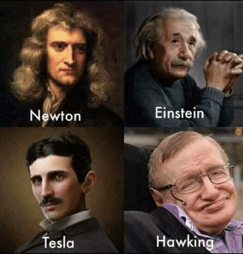

a world with science and technology
I love Sci-Tech!
a world with mortal spirits but great minds
Tesla Einstein Newton Hawking...

Riemann Maxwell Faraday Boltzmann...
To view the images of Boltzmann and Riemann, double click
the button below:
Science and technology can create great minds and vice versa.
To hide the above images, click
the button below:
To read the poem, click
the button below:
What Will Happen in the Next 100 Trillion Years?
Anqing, Anhui--My Birthplace and China's Hometown of Huangmei Opera
//